Workshop Internacional de Inovação na Educação Profissional que tem como principal objetivo disseminar experiências vivenciadas por professores da Rede Federal de Educação Profissional, Científica e Tecnológica (Rede Federal) que participam das duas edições do Programa Professores Para o Futuro - Filândia (I e II), para os demais professores, pedagogos e técnicos em assuntos educacionais de toda a Rede Federal.
I Simpósio de Pesquisa, Pós-Graduação e Inovação do IFPB (I SIMPIF) congrega ações referentes à pesquisa, inovação e pós-graduação do IFPB, possibilitando a socialização de experiências que contribuem de modo significativo para a produção de conhecimento e à interação social.
III Seminário de Inovação Tecnológica do IFPB que visa disseminar a cultura da inovação.
I Encontro de Educação a Distância do IFPB (EEAD) que busca promover o desenvolvimento e a divulgação dessa modalidade de ensino na Instituição. O evento ofertará palestras, mesas redondas, mini cursos e oficinas com vistas à atualização e integração de profissionais que atuam na EAD no Instituto Federal da Paraíba.
Tribunal de contas - Rua Professor Geraldo Von Sohsten, 147, Jaguaribe, João Pessoa - Paraíba
IFPB - 720 Av. Primeiro de Maio, Jaguaribe, João Pessoa - Paraíba